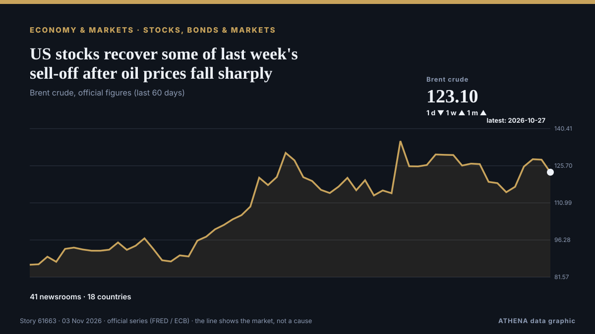

Aktien, Anleihen und Märkte
GesponsertPräsentiert von  Cybernetics and Artificial Intelligence Lab Welcome to the Cybernetics and Artificial Intelligence Laboratory, established at the Department of Business Administration of the National
Cybernetics and Artificial Intelligence Lab Welcome to the Cybernetics and Artificial Intelligence Laboratory, established at the Department of Business Administration of the National
| 21. Okt. | 0 |
|---|---|
| 22. Okt. | 1 |
| 23. Okt. | 0 |
| 24. Okt. | 0 |
| 25. Okt. | 0 |
| 26. Okt. | 1 |
| 27. Okt. | 0 |
| 28. Okt. | 0 |
| 29. Okt. | 0 |
| 30. Okt. | 7 |
| 31. Okt. | 3 |
| 1. Nov. | 1 |
| 2. Nov. | 10 |
| 3. Nov. | 0 |
Schlagzeilen werden auf Englisch angezeigt, wie veröffentlicht.

US stocks recover some of last week's sell-off after oil prices fall sharply
U.S. stocks are climbing Monday after oil prices eased back. von The Korea Times
Anthropic Reports $17 Billion Quarterly Revenue Ahead of IPO
Anthropic’s revenue reached $17 billion for the three months ended Sept. von PYMNTS
Palantir reports booming U.S. commercial revenue growth, topping government for first time
Palantir's commercial revenue jumped 148% to $984 million, surpassing government revenue of $953 million. von CNBC World
Jack Lowden speaks out over James Bond rumours as speculation soars over future 007
The Slow Horses actor is one of the rising stars of his generation - could he be the next 007? von Evening Standard (London)
An unusual sexual bond between a bull and a male donkey
Sex between animals of the same sex is widespread in nature. von Phys.org
Bulgarian Stock Market Rallies as It Hits Nearly 19-Year High
BCS World of Investments expects the MOEX Index to remain above 2,400 points on Friday. von TASS (English)
Warren Buffett, 96, has ‘not had water in 48 years’: ‘No thank you. I’ll have a…’
Jeff Bezos shared insights on investing in artificial intelligence stocks while discussing broader market trends. von Times of India
Only 12 stocks rise as Turkish exchange sheds $128B in fund scandal fallout
Turkey’s benchmark stock index has lost more than a quarter of its value in seven weeks as selling following an investment fund scandal spread to some of the country’s biggest companies, the Ekonomim… von Turkish Minute
S&P cuts Meta’s outlook to negative
Meta has been given a negative outlook by S&P Global Ratings due to the company's hefty capital expenditures and concerns about free cash flow. von CNBC World
Anthropic plans to sell $3.5 billion of shares to Japan investors in IPO, filing shows
This will go towards raising working capital and funding operating expenses and capital expenditure. von The Business Times
OPay Halts $4 Billion NYSE IPO on Listing Day
OPay, a digital financial platform built for emerging markets, has decided to postpone its planned initial public offering due to “an ongoing inquiry by a regulatory authority,” the company said in a… von PYMNTS
Treasury minister: ‘I don’t think employers are working people’
A top treasury minister has said she does not think “employers are working people” reigniting fierce debate over whether Labour broke its manifesto pledge not to raise taxes for working people. von City A.M.
CJP backs INDIA bloc's Ramlila Maidan rally, but won't participate in it, says Dipke; cites ‘neutral platform’ identity
Abhijeet Dipke said the CJP supported the cause but would maintain its independent identity. von Hindustan Times
Tompolo rallies support for Tinubu in Ogun
Government Ekpemupolo, popularly known as Tompolo, has urged residents of Ogun State to support President Bola Tinubu’s reelection bid in 2027, saying the administration’s economic reforms are… von Daily Trust
Bethany thought only veterans and first responders got PTSD. Then she gave birth
Thousands of parents and experts have made submissions about gaps in postpartum healthcare to a parliamentary committee on women’s health, which will hold its first hearing on Monday in Sydney. von Sydney Morning Herald
Nasdaq faces $2 trillion wipeout in October as AI spending fears deepen
More than $2 trillion in market value is set to be wiped from the tech-heavy Nasdaq 100 this month, as Big Tech earnings intensified investor scrutiny of whether the billions being poured into… von The Korea Times
Treasury Says Iran’s Economy Is Crippled
The report does not claim the Iranian government is close to collapse, but says the rial has lost about a quarter of its value since August, inflation has reached 90%, and no oil has been loaded onto… von Kurdistan24 (English)
France faces long-term debt risks despite no immediate crisis, Eurobank says
France is not facing an immediate risk of a public debt crisis comparable to the eurozone turmoil of the 2010s, but persistent deficits, weak economic growth and rising borrowing costs pose… von Cyprus Mail